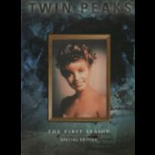

|

"Twin Peaks: Season 1" (1990 - 411m)
SINOPSE
De Mark Frost e do por três vezes nomeado para os Óscares David Lynch (Um Coração Selvagem, Veludo Azul e O Homem Elefante), chega-nos Twin Peaks, a série de mistério, perversa, negra e imaginativa que se tornou um dos acontecimentos mais aclamados na história da televisão.
Depois do brutal assassinato da regressada rainha de Twin Peaks, Laura Palmer, o Agente Cooper (Kyle MacLachlan) descobre que a pequena cidade está recheada de segredos mortais e tartes de cereja. Então, Cooper interpreta um estranho sonho acerca do crime, toma chá com a mulher do cepo e descobre uma macabra cena de crime na floresta, ficando determinado em resolver o mistério.
Episódio piloto - "The Secret of Twin Peaks" (duração de cerca de 90 min.)
7 episódios:
. Traces to Nowhere
. Zen, or the skill to catch a killer
. Rest in pain
. The one-armed man
. Cooper's Dreams
. Realization Time
. The Last Evening
(Duração de cerca de 45 min. cada.)
Extras:
Cada episódio é acompanhado por um comentário áudio dos realizadores (não do David Lynch) e/ou argumentistas e outros.
Cada episódio tem a opcção de uma introdução de cerca de 1 min da Senhora do Tronco (Log Lady). Surgiam no iníco dos episódios transmitidos nos E.U.A., com referências enigmáticas a aspectos
importantes do episódio a ser apresentado.
Cada episódio tem a opcção de ver alterações do argumento, pequenos textos que aparecem durante os episódios, na maioria reportam cenas e diálogos apagados/alterados do argumento.
Em cada menu de suplementos existe um extra escondido que leva a entrevistas bónus.
Com a designação TIBET temos no último disco vários documentários e entrevistas: Entrevista com Mark Frost - Entrevista telefónica de cerca de 15 min entre os dois fundadores da Franzine oficial sobre a série Twin Peaks, "Wrapped in Plastic" com o co-autor da série, Mark Frost.
Aprender a Falar no Quarto Vermelho - Em cerca de 4 minutos e 3 lições, Michael Anderson o anão da famosa cena do sonho no Quarto Vermelho, ensina como falar ao contrário.
Introdução a David Lynch - cerca de 25 minutos de entrevistas com actores e outros sobre David Lynch.
17 Fatias de Tarte - Entrevista de 10 minutos com a verdadeira proprietária do bar que aparece na série.
Postais do Elenco - Uma lista de actores apresentada em menus, onde se pode aceder a dados bibligráficos ou a "video" postais.
|
VIDEO
Standard 1.33:1 [4:3]
AUDIO
Inglês Dolby Digital 5.1
Inglês Dolby Digital 2.0
Espanhol Mono
Alemão Mono
Italiano Mono
LEGENDAS
Português
Inglês
Espanhol
Grego
Checo
Turco
Italiano
Alemão
Holandês
Sueco
Norueguês
Dinamarquês
OPÇÕES ESPECIAIS
. Menus Interactivos
. Índice das Cenas
. 7 Easter Eggs
. 7 comentários
. Entrevista com Mark Frost
. Introdução por David Lynch
. 17 cenas cortadas
. Postais do Elenco
. Aprender a Falar no Quarto Vermelho
DISCOS/LADOS
3 discos de 1 lado
ESTÚDIO
Lynch/Frost Productions
Spelling Entertainment
Twin Peaks Productions, Inc.
Paramount Pictures
DISTRIBUIÇÃO
Lusomundo Audiovisuais, SA
|